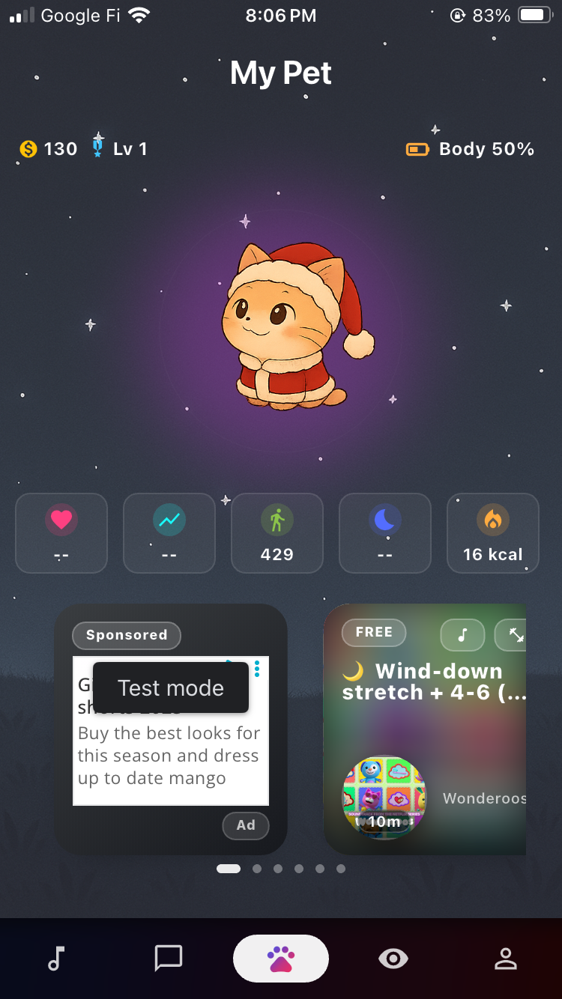
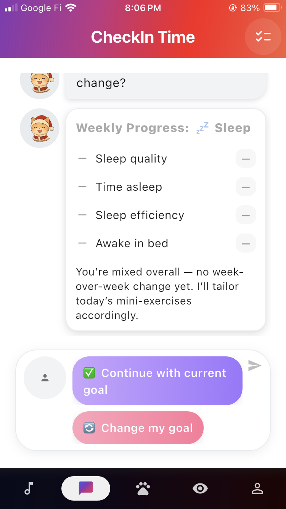
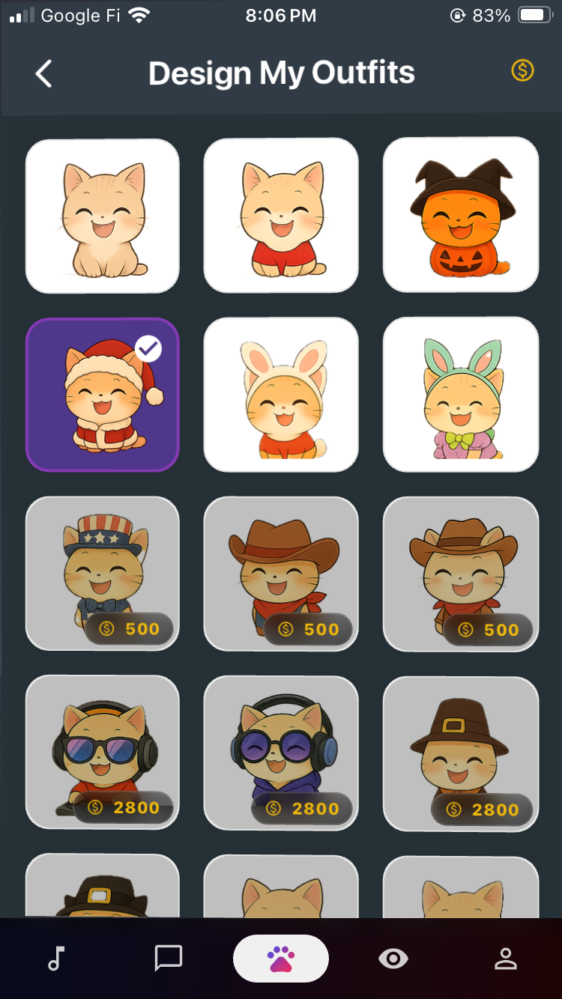
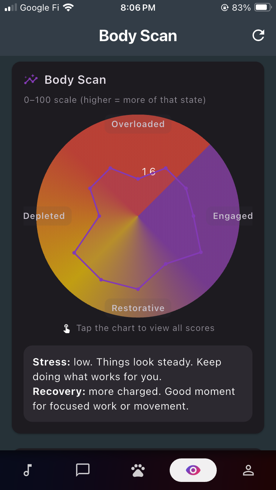
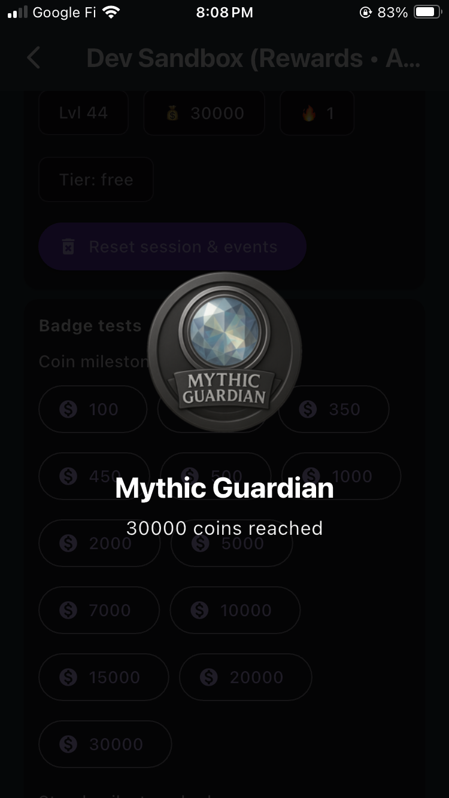
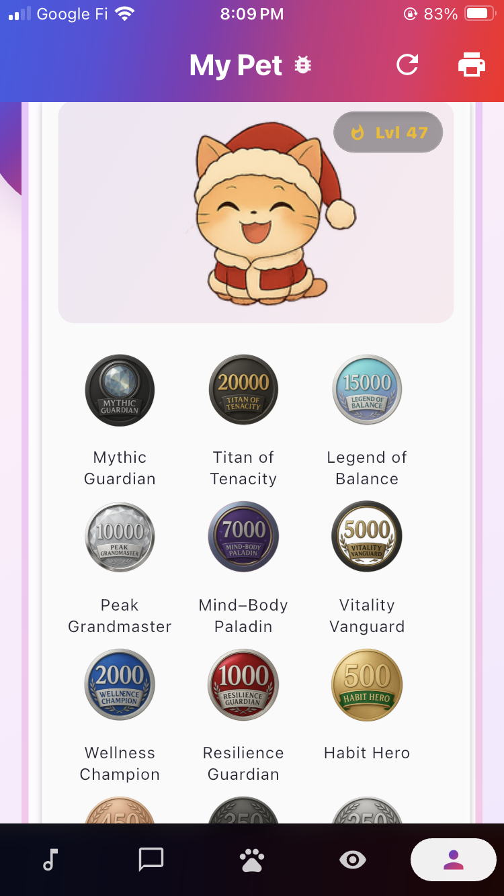
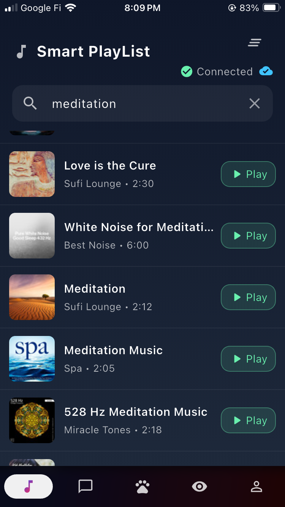
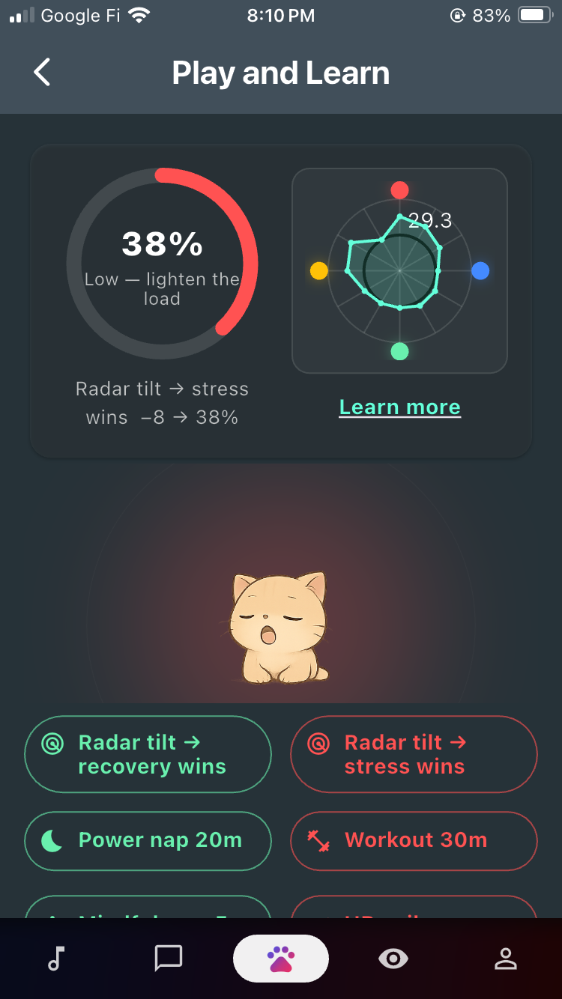
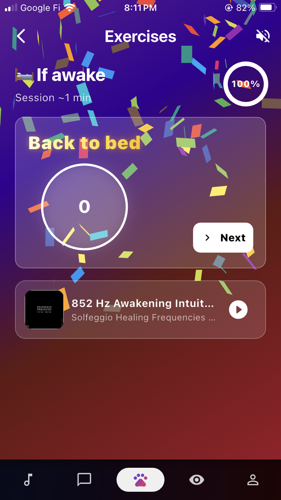
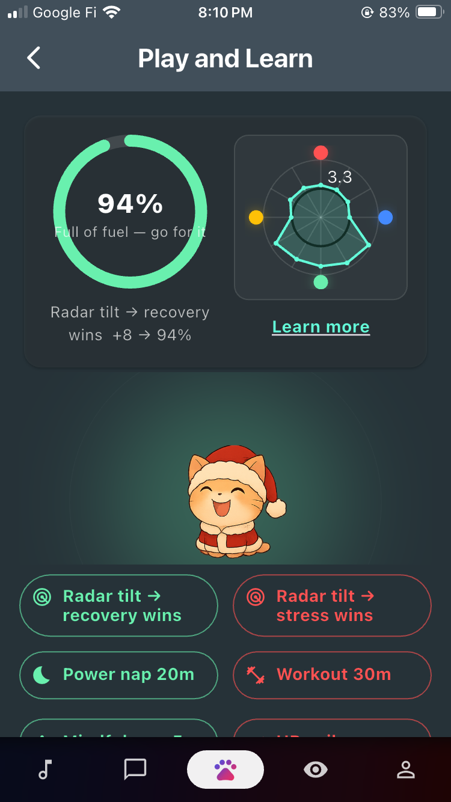

LoopPets
LoopPets
Mood support that feels kind
Check in, breathe, and understand your signals with a caring, mood‑reactive pet. We lead with transparency and education so insights make sense to everyone.

Your pet mirrors your mood and offers tiny wins.

Simple check‑ins and plain‑language progress.
Designed for real life
Mood‑reactive pet
Feel seen in seconds with supportive reactions.
Feel seen in seconds with supportive reactions.
Decompress fast
Breathing, grounding, and lofi in one place.
Breathing, grounding, and lofi in one place.
Transparent insights
We explain what data is used and why—no jargon.
We explain what data is used and why—no jargon.
Body Scan
A clear radar view of states like stress and recovery.
A clear radar view of states like stress and recovery.
Play & Learn
Actionable nudges (power nap, workout, grounding).
Actionable nudges (power nap, workout, grounding).
Earnable badges
Celebrate progress without pressure.
Celebrate progress without pressure.
Apple Health snapshots
Smart playlists & lofi
1‑tap check‑ins
Gentle reminders
Wardrobe & outfits
See it in action








Built on transparency and education
LoopPets turns Apple Health signals into plain‑language insights you can act on. We clearly show what we use and why, with controls you can change anytime.
Read our Privacy Policy or Support to learn more.
Start your first check‑in
It takes less than 10 seconds.